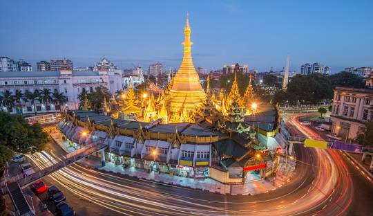

Yangon is the largest city in Myanmar (formerly Burma). It has a mix of different cultures and is known for its beautiful temples, especially the famous Shwedagon Pagoda. The city has old colonial buildings and busy markets. It’s an important place for business and has a warm, tropical climate.
Popular Places
- Shwedagon Pagoda A stunning golden stupa and one of the most sacred Buddhist sites in Myanmar.
- Sule Pagoda: An iconic octagonal pagoda located in the heart of the city, surrounded by busystreets and shops.
- Bogyoke Aung San Market A popular market known for its variety of local crafts, textiles, and street food.
- Yangon Circular Train A scenic train ride that offers views of the city and its outskirts, providing a glimpse into local life.
- Kandawgyi Lake: A picturesque lake with walking paths, gardens, and views of the nearby Karaweik Palace, perfect for relaxation and leisure.
Back to homepage